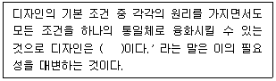
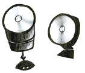
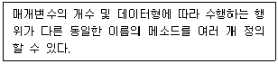
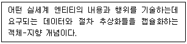
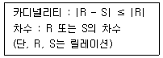
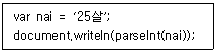
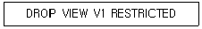
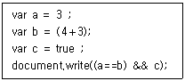

멀티미디어콘텐츠제작전문가 (2019-03-03 기출문제)
1과목: 멀티미디어개론
1. 수많은 사적 거래 정보를 개별적 데이터 블록으로 만들고, 이를 체인처럼 연결하는 블록체인 기술은?
- 시민해킹
- 피에스-엘티이
- 버퍼블로트기술
- 분산원장기술
(정답률: 72%)

2. 사물인터넷이 진화하여 새로운 가치와 경험을 창출해 내는 미레 인터넷으로 존재하는 모든 사람과 프로세스, 데이터까지 모바일, 클라우드 등이 서로 결합된 네트워크를 말하는 것은?
- IoE
- CEP
- Paas
- UML
(정답률: 91%)
3. 대칭키 암호방식에 근거한 키 분배 알고리즘은?
- PKI
- RSA
- Kerberos
- DSS
(정답률: 52%)
4. IPTV에서 사용되는 플랫폼(Platform)기술 중 실시간 채널에 대한 암호화 및 VOD 콘텐츠의 사전 암호화를 수행하며 시청 권한을 제어하는 기능은?
- CAS(Conditional Access System)
- DRM(Digital Rights Management)
- MOC(Media Operation Core)
- BB(Base Band)
(정답률: 67%)
5. 컴퓨터가 사람을 대신하여 정보를 읽고 이해하고 가공하여 새로운 정보를 만들어 낼 수 있도록 이해하기 쉬운 의미를 가진 차세대 지능형 웹은?
- N Screen
- Smart Grid Web
- Semantic Web
- Topic Web
(정답률: 79%)
6. 다음 중 인터넷 표준화 단체와는 가장 관계가 먼 것은?
- W3C
- IETF
- K/OPEN
- IAB
(정답률: 73%)
7. UNIX 시스템에서 커널이 수행하는 기능으로 거리가 먼 것은?
- 프로세스 관리
- 기억장치 관리
- 입출력 관리
- 명령어 해석
(정답률: 79%)
8. UNIX 에서 파일 소유자의 식별 번호, 파일 크기, 파일의 최종 수정시간, 파일의 링크 수 등의 내용을 가지고 있는 것은?
- I node
- Super Block
- Mounting
- Boots
(정답률: 80%)
9. TCP/IP 프로토콜 중에서 단대단(Point to Point) 연결, 데이터 전송 및 흐름제어 등 서비스를 제공하는 프로토콜은?
- HTTP
- FTP
- IP
- TCP
(정답률: 64%)
10. 운영체제의 목적으로 거리가 먼 것은?
- 처리 능력 향상
- 반환 시간의 최대화
- 신뢰도 향상
- 사용 가능도 향상
(정답률: 77%)
11. 비연결 지향 전송계층 프로토콜은?
- UDP
- TCP
- ICMP
- SMTP
(정답률: 80%)
12. 정보보호를 위한 암호화에 대한 설명으로 거리가 먼 것은?
- 평문 – 암호화되기 전의 원본 메시지
- 암호문 – 암호화가 적용된 메시지
- 키(Key) – 적절한 암호화를 위하여 사용하는 값
- 복호화 – 평문을 암호문으로 바꾸는 작업
(정답률: 81%)
13. 애플의 매킨토시에서 사용되는 사운드 포맷으로 사운드 데이터 자체와 데이터의 기록방식을 함께 포함하고 있어, 일반적인 웨이브 파일의 기록에 사용되는 파일 포맷은?
- AU
- RIFF
- AIFF
- MOD
(정답률: 71%)
14. 다음 중 정보보안의 기본 목표가 아닌 것은?
- 가용성
- 통합성
- 기밀성
- 무결성
(정답률: 85%)
15. 2개의 음이 동시에 존재할 때 한쪽 음이 다른 한쪽의 음에 의해 은폐되어 들리지 않는 현상은?
- 바이노럴 현상
- 마스킹 현상
- 푸리에 현상
- 웨이블릿 현상
(정답률: 84%)
16. 인공지능이 빅데이터 분석을 바탕으로 사람과 일상 언어로 대화할 수 있도록 구현되는 기술은?
- 브레드 크럼즈
- 스레드
- 챗봇
- 토큰화
(정답률: 90%)
17. OSI 7 계층 모델 중 보안을 위한 암호화 / 해독과 효율적인 전송을 위한 정보 압축 등의 기능을 수행하는 계층은?
- 응용계층
- 표현계층
- 전달계층
- 네트워크계층
(정답률: 56%)
18. IEEE 802.11 무선 LAN의 매체접속제어(MAC) 방식은?
- CSMA/CD
- CSMA/CA
- Token Bus
- ICMP
(정답률: 67%)
19. 신뢰성 있는 통신을 위하여 최초접속이 3-Way HandShake를 수행하여 syn, syn＋ack, ack 신호를 통한 정확성 있는 통신에 이용되는 프로토콜은?
- HTTP
- TCP
- UDP
- IP
(정답률: 80%)
20. IPv6의 주소체계에 대한 설명으로 거리가 먼 것은?
- 주소의 길이는 128비트이다.
- 표시방법은 16비트씩 8부분으로 16진수로 표시한다.
- 데이터 무결성, 데이터 기밀성을 지원하도록 보안기 능을 강화하였다.
- 주소할당은 A, B, C 클래스에 비순차적으로 할당한다.
(정답률: 77%)
2과목: 멀티미디어기획및디자인
21. 색이 주는 감정효과에 대한 설명으로 틀린 것은?
- 경연감은 톤에 의해 영향을 많이 받는다.
- 난색계의 고명도 색은 부드러운 느낌을 준다.
- 무채색이 많이 섞인 색은 부드러운 느낌을 준다.
- 명도에 의한 무게감과 채도에 의한 경연감이 복합적으로 작용한다.
(정답률: 67%)
22. 아이디어 발상 초기 단계의 스케치를 말하며 정확도가 요구되지 않는 가장 불완전한 스케치를 무엇이라 하는가?
- 스타일 스케치
- 스크래치 스케치
- 렌더링 스케치
- 프로토타입 스케치
(정답률: 79%)
23. 다음 중 디지털 색채에 대한 설명으로 거리가 가장 먼 것은?
- 컴퓨터를 통해 신호를 주고받으며 색을 재현하는 모든 장치에서 보여지는 색을 말한다.
- 데이터 입출력장치와 이를 처리하는 컴퓨터의 사양에 따라 색이 달라진다.
- 디지털 카메라와 컬러 핸드폰 액정도 디지털 색채와 같은 특징을 가지고 있다.
- 스캐너를 통해 입력된 사진은 디지털 색채라고 볼 수 없다.
(정답률: 81%)
24. 디자인 시안을 클라이언트에게 설명하는 프레젠테이션 문서를 작성할 때 주의할 사항으로 옳지 않은 것은?
- 지나친 멀티미디어 요소는 피한다.
- 문서의 가독성을 고려한다.
- 설명에 대한 글은 반드시 슬라이드로 보여주는 것이 좋다.
- 발표 내용과 연관된 그래픽 이미지, 사운드, 영상 등의 자료를 활용한다.
(정답률: 84%)
25. 컴퓨터그래픽스에 대한 설명으로 옳지 않은 것은?
- 여러 수작업의 도구들을 하나의 도구로 통합하였다.
- 빠르고 정확하게 작업할 수 있다.
- 작업의 능률성을 높일 수 있다.
- 자연적인 미나 기교를 완벽히 살릴 수 있다.
(정답률: 86%)
26. 디자인의 요소 중에는 시각 요소와 상관 요소가 있다. 다음 중 시각 요소와 거리가 먼 것은?
- 중량
- 형태
- 색채
- 질감
(정답률: 84%)
27. 디자인의 형태에서 이념적 형태는 자체로써는 조형이 될 수 없기 때문에 지각할 수 있도록 점, 선, 면, 입체 등으로 나타내는데 이를 무엇이라 하는가?
- 순수 형태
- 현실 형태
- 구상 형태
- 자연 형태
(정답률: 62%)
28. 컴퓨터 애니메이션에 대한 설명으로 틀린 것은?
- 일반적으로 2D, 3D 애니메이션으로 나눌 수 있다.
- 키프레임을 우선 제작하고 시간의 흐름에 따라 키프 레임 사이의 나머지 중간 프레임들의 내용을 채워나가는 방식을 트위닝이라 한다.
- 하나하나의 그림을 프레임이라 하고, 프레임의 속도와 수에 따라 애니메이션의 속도와 시간이 달라진다.
- 하나의 영상이 다른 영상으로 변화하는 과정을 자연스럽게 연결하여 표현하는 기법을 컷아웃 애니메이션이라 한다.
(정답률: 79%)
29. 색에 따라 무겁거나 가볍게 느껴지는 현상을 중량감이라고 한다. 색의 삼속성 중 중량감에 가장 크게 영향을 주는 것은 무엇인가?
- 색상
- 명도
- 채도
- 색상, 명도, 채도에 영향을 받지 않는다.
(정답률: 71%)
30. 다음 중 ( ) 안에 들어갈 알맞은 단어는?

- 창의성
- 질서
- 아이디어
- 경제성
(정답률: 84%)
31. 브레인 스토밍법에 대한 설명으로 가장 적절한 것은?
- 2개 이상의 것을 결합하여 합성한다는 의미이다.
- 고정 관념을 배제하고 수용적인 분위기에서 많은 아이디어를 찾아내기 위한 방식이다.
- 사전적으로 '끝장을 보는 회의라는 뜻으로' GE의 잭웰치(John Frances Welch Jr.) 전 회장이 기업 문화 혁신을 위한 수단으로 주창했다.
- 개개의 사실이나 정보를 직관적으로 연계하는 것이다.
(정답률: 85%)
32. 빅터 파파넥(Victor Papanek)이 주장한 디자인의 복합기능에 대한 설명으로 거리가 먼 것은?
- 텔레시스 : 보편적인 것이며, 인간의 마음 속 깊이 자리 잡고 있는 충동과 욕망의 관계
- 방법 : 재료와 도구를 타당성 있게 사용하는 것
- 필요성 : 경제적, 심리적, 정신적, 기술적, 지적 요구에 의해 전개되는 것
- 용도: 기능과 실용성을 바탕으로 하며 목적에 부합되는 것
(정답률: 73%)
33. 흰색 배경의 회색보다 검정색 배경의 회색이 더 밝게 보이는 대비 현상은?
- 보색대비
- 채도대비
- 명도대비
- 색상대비
(정답률: 77%)
34. 데이터를 일시적으로 저장하였다가 쓸 수 있는 휘발성 기억장치는?
- ROM
- RAM
- BIT
- CPU
(정답률: 75%)
35. 다음 중 동시대비에 대한 설명으로 거리가 먼 것은?
- 인접하는 색의 차이가 클수록 대비효과는 커진다.
- 사물의 크기가 작을수록 대비효과가 강하게 일어난다.
- 오래 계속해서 볼수록 대비현상의 세기는 강해진다.
- 자극이 되는 부분이 멀어질수록 대비효과는 약해진다.
(정답률: 57%)
36. 로고타입(Logotype)의 기능이 아닌 것은?
- 독자성
- 상징성
- 가독성
- 신비성
(정답률: 81%)
37. 그림에서 제시된 이미지의 형태에서 느껴지는 디자인의 원리는 무엇인가?

- 근접의 원리
- 착시의 원리
- 반복의 원리
- 대비의 원리
(정답률: 71%)
38. 다음 중 타이포그래피의 가독성에 관한 설명으로 가장 적절치 않은 것은?
- 작은 글자보다는 큰 글자가 대체로 가독성이 좋다.
- 영문의 경우 대문자 보다는 소문자로 된 단어들을 더 빠르고 편하게 읽을 수 있다.
- 정렬을 할 때는 양 끝 정렬이 왼 끝 정렬보다 글을 읽기 쉽다.
- 일반적으로 기본 폰트가 폭을 좁히거나 늘이거나 장식하거나 단순화한 것보다 더 읽기 쉽다.
(정답률: 70%)
39. 텍스트는 인터페이스에서 중요한 구성 요소이면서 콘텐츠의 일부이기도 하다. 다음 중 텍스트에 대한 설명으로 가장 거리가 먼 것은?
- 판독성은 글자의 모양을 보고 어떻게 생긴 것인지 알아볼 수 있는 정도를 말하며, 판독성이 잘 되도록 디자인해야 한다.
- 가독성을 읽기 쉬운 것을 말하며, 가독성이 높도록 디자인해야 한다.
- 글자의 크기는 글꼴에 따라 차이가 있지만, 본문 텍스트는 영문, 한글 6포인트 이하가 바람직하다.
- 가독성을 주로 글의 양이 많은 잡지나 신문에 관여 하고, 판독성은 글의 양이 적은 헤드라인, 목차, 로고타입 등에 관여한다.
(정답률: 83%)
40. 흑백으로 나눈 면적을 고속으로 회전시키면 파스텔 톤의 연한 유채색이 나타나는 색의 잔상 효과는?
- 에브니 효과
- 페히너 효과
- 맥컬로 효과
- 보색 잔상 호과
(정답률: 64%)
3과목: 멀티미디어저작
41. 다음이 설명하고 있는 객체지향 개념은?

- 다형성
- 재사용
- 캡슐화
- 속성
(정답률: 70%)
42. 자바스크립트의 내장 객체 중 최상위 객체이고 현재 화면에 출력되는 창에 대한 정보를 제공하는 객체는?
- Location
- History
- Screen
- Window
(정답률: 71%)
43. HTML 파일에서 특수문자 <가 브라우저에 출력 되는 기호로 맞는 것은?
- ＞
- ＜
- =
- &&
(정답률: 77%)
44. XML에서 XSL - FO 문서의 구성부분이 아닌 것은?
- fo : layout-master-set
- fo : body-anchor
- fo : declarations
- fo : page-sequence
(정답률: 50%)
45. 객체지향 개념 중 다음 예문이 설명하는 개념은?

- Class
- Property
- Layer
- Applet
(정답률: 63%)
46. 다음 성질을 만족하는 관계 연산자는?

- 합집합
- 차집합
- 교집합
- 조인
(정답률: 59%)
47. 유효한 HTML 문서나 XML 문서의 구조, 내용, 스타일을 다루기 위한 플랫품과 언어 중립적인 프로그래밍 인터페이스는?
- DOM(Document Object Model)
- DDM(Document Define Model)
- PIM(Programming Interface Model)
- DTD(Document Type Definition)
(정답률: 59%)
48. 구글 I/O에서 발표한 차세대 웹 동영상 코덱으로 로열티 비용이 없는 개방형 고화질 동영상 압축 형식의 비디오 포맷으로 VP8 비디오와 Vorbis 오디오로 구성되어 있으며 HTML5에서 작동되는 동영상 포맷은?
- H.264
- Ogg
- WebM
- Mov
(정답률: 57%)
49. 사용자가 작성한 HTML 문서에 있는 태그와 특수 기호까지 웹 브라우저 화면에 그대로 보여주는 태그는?
- ＜di＞
- ＜xmp＞
- ＜sup＞
- ＜dfn＞
(정답률: 53%)
50. 데이터베이스에서 순수관계 연산자 중 Project 연산의 연산자 기호는?
- π
- σ
- －
- ε
(정답률: 58%)
51. HTML5에서 지정된 범위에서 해당 값이 어느 정도 차지하고 있는지를 표현하는 태그로 적절한 것은?
- ＜col＞
- ＜nav＞
- ＜span＞
- ＜meter＞
(정답률: 68%)
52. 자바스크립트의 생성자 함수를 이용하여 객체를 생성할 때 사용하는 예약어는?
- Function
- Instance of
- New
- Typeof
(정답률: 69%)
53. 객체지향언어에서 모듈을 반복하지 않고 비슷한 모듈을 하나만 생성하여 재사용할 수 있도록 해주는 개념은?
- 속성
- 멤버
- 추상화
- 상속
(정답률: 59%)
54. 다음 자바스크립트 코드 실행 시 결과 값은?

- 25살
- 2
- 5
- 25
(정답률: 67%)
55. XML 문서를 해석하고 검색하는 기능을 제공하는 범용 XML 질의 언어는?
- Pascal
- Path
- XSLT
- XQuery
(정답률: 63%)
56. Rumbaugh의 객체 모델링(OMT)에서 사용하는 모델링이 아닌 것은?
- 행동 모델링
- 객체 모델링
- 동적 모델링
- 기능 모델링
(정답률: 48%)
57. 관계 데이터 모델에서 릴레이션에 포함되어 있는 튜플(Tuple)의 수는?
- Cartesian Product
- Attribute
- Cardinality
- Degree
(정답률: 55%)
58. 기본 테이블 X를 이용하여 view V1을 정의, view V1을 이용하여 다시 view V2가 정의되었다. 기본 테이블 X와 view V2를 조인하여 view V3을 정의하였을 때 아래와 같은 SQL문이 실행되면 결과는?

- V1 만 삭제된다.
- X, V1, V2, V3 모두 삭제된다.
- V1, V2, V3 만 삭제된다.
- 하나도 삭제되지 않는다.
(정답률: 52%)
59. 직원 테이블에서 [급여] 가 200 이상인 직원에 대해 [나이] 는 오름차순, [급여] 는 내림차순으로 직원의 [성 명] 을 검색하는 구문으로 맞는 것은?
- SELECT 나이 FROM 직원 WHERE 급여 ＞= 200 ORDER BY 성명 ASC, 급여 DESC ;
- SELECT 급여 FROM 직원 WHERE 급여 ＞ 200 ORDER BY 나이, 성명 ;
- SELECT 성명 FROM 나이 WHERE 급여 ＞= 200 ORDER BY 나이 DESC, 성명 ASC ;
- SELECT 성명 FROM 직원 WHERE 급여 ＞= 200 ORDER BY 나이 ASC, 급여 DESC ;
(정답률: 65%)
60. 자바스크립트 코드의 실행 결과로 옳은 것은?

- a == b && c
- 3 == 7 && false
- true
- false
(정답률: 72%)
4과목: 멀티미디어제작기술
61. 정지 사진이나 한 장의 그림에 해당되는 영상의 시간적 최소 단위는?
- Cut
- Shot
- Frame
- Scene
(정답률: 81%)
62. 마이크와 앰프가 한 채널로 연결되어 있으며, 한 채널의 스피커 시스템으로 재생하는 방식은?
- Monophonic
- Binaural
- Stereophonic
- Diotic
(정답률: 70%)
63. 마스크 영상에서 해당하는 키 화상(Key Image)을 추출함과 동시에 배경 영상을 전경 영상으로 합성하는 디지털 영상 합성 방법은?
- 필름의 합성
- 전처리 과정
- 크로마키 합성
- 양자화
(정답률: 77%)
64. 다중 해상도를 갖는 폴리곤 모델링 방식으로 넙스(Nurbs) 모델의 부드러운 곡면표현 능력과 폴리곤(Polygon) 모델의 유연함을 혼합한 것은?
- Subdivision or Mesh Smoothing
- Extrude Surface
- Revolved Surface
- Lofted Surface
(정답률: 65%)
65. MPEG의 압축기술에서 사용하는 화면 중 프레임 간의 순방향 예측부호화 영상은 어느 것인가?
- I(Intra Coded) Picture
- P(Predictive Coded) Picture
- B(Bidirectional Coded) Picture
- T(Temporal Coded) Picture
(정답률: 65%)
66. 다음 중 3차원의 형상 모델링이 아닌 것은?
- 서피스 모델링
- 와이어 프레임 모델링
- 시스템 모델링
- 솔리드 모델링
(정답률: 65%)
67. 비주얼 프로세스(Visual Process)의 과정 중 감각을 통해 얻은 정보와 과거의 경험을 상기시켜 종합적인 판단을 이루는 과정을 무엇이라 하는가?
- 시각
- 지각
- 인지
- 청각
(정답률: 58%)
68. 디지털 카메라의 CCD 화소 수와 가장 직접적으로 관계가 잇는 요소는?
- 이미지의 크기
- 이미지의 채도
- 이미지의 색감
- 이미지의 밝기
(정답률: 72%)
69. 오디오 신호의 양자화 과정에서 왜곡을 줄이기 위해 잡음 신호를 혼합하는 기법은?
- 에일리어싱(Aliasing)
- 디더링(Dithering)
- 오버 샘플링(Over Sampling)
- 렌더링(Rendering)
(정답률: 67%)
70. 3차원 모델링에서 물체에 질감을 표현하기 위한 기법은?
- Dithering
- Texture Mapping
- Blend
- Material
(정답률: 76%)
71. 다음 중 소프트웨어 코덱(CODEC)이 아닌 것은?
- Cinepack
- Intel Indeo
- DV Raptor
- Microsoft Video
(정답률: 45%)
72. 잔상효과를 이용한 애니메이션 초기 장치를 무엇이라 하는가?
- 페나키스티스코프(Phenakistiscope)
- 조트로프(Zoetrope)
- 키네토스코프(Kinetoscope)
- 프락시노스코프(Praxinoscope)
(정답률: 53%)
73. 이미지의 크기를 피사체의 실제 크기와 같거나 더 크게 보이게 만드는 촬영기법은?
- 접사 촬영
- 적외선 촬영
- 인터벌 촬영
- 콤마 촬영
(정답률: 76%)
74. 녹음실에서 영상을 보면서 필요한 음향효과를 직접 신체나 물건 등을 이용하여 제작하는 작업은?
- 배경음(Ambience)
- A/B TEST
- 신시사이저(Synthesizer)
- 폴리(Foley)
(정답률: 73%)
75. 2D 애니메이션 기법에 속하지 않는 애니메이션은?
- 셀 애니메이션(Cel Animation)
- 오브제 애니메이션(Object Animation)
- 컷아웃 애니메이션(Cut - Out Animation)
- 페이퍼 애니메이션(Paper Animation)
(정답률: 66%)
76. 다음 중 3D 그래픽 편집 도구가 아닌 것은?
- Freehand
- Alias
- Light Wave
- Maya
(정답률: 54%)
77. 음향편집에서 사용되는 이펙터로 합창과 같은 효과로 사용되는 이펙터는 무엇인가?
- 에코
- 코러스
- 디스토션
- 컴프레스
(정답률: 79%)
78. 다음 중 컬러 모델(Color Model)에 대한 설명으로 틀린 것은?
- RGB 모델은 적색, 녹색, 청색이 기본이 되는 컬러 모델이다.
- CMY 모델은 기본색을 더해서 컬러를 표현하는 가산 모델이다.
- HSB 모델은 인간의 시각 모델과 흡사한 컬러 모델로서 색상, 채도, 명도의 세 가지 속성을 변환하여 사용한다.
- Indexed Color는 색상보기표(CLUT)를 만들어놓고, 화면상의 한 점은 이에 대응하는 메모리 영역의 주소를 가짐으로서 해당 픽셀의 색상 값을 표현하는 방법이다.
(정답률: 65%)
79. 가상현실(VR : Virtual Reality)의 몰입감을 위한 기계장치로 볼 수 없는 것은?
- Avatar
- HMD
- Data Glove
- Haptic Device
(정답률: 63%)
80. 애니메이션 기법 중에 대상물의 움직임을 시작 단계와 끝 단계를 기준으로, 중간 단계를 생성하는 방식을 무엇이라고 하는가?
- 스트레이트 어헤드 방식
- 포즈 투 포즈 방식
- 로토스코핑 방식
- 스톱모션 방식
(정답률: 62%)